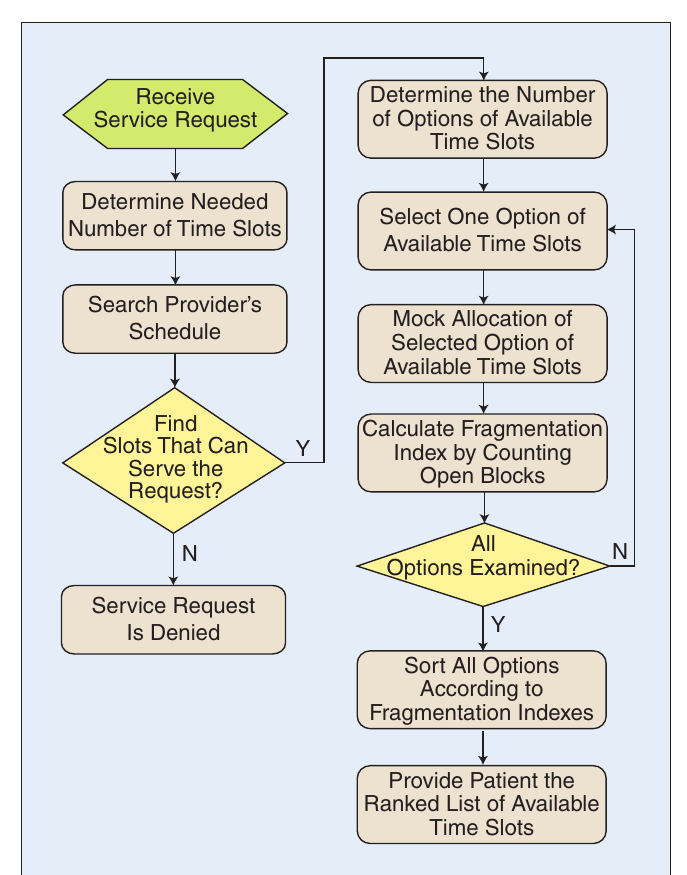
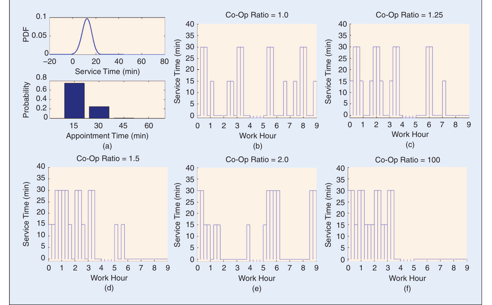
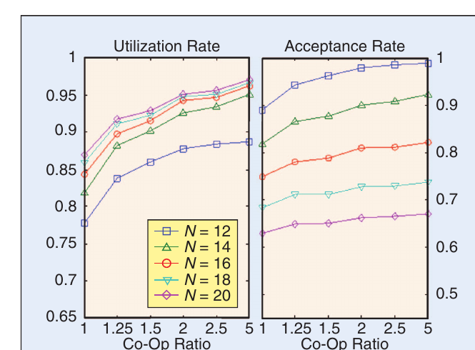

- 断片化指数 10 → 315分枠・10件の予約の例で、協力比（患者が医師の勧める候補を選ぶ度合い）を 1.0 から 2.0 に上げたときの空きの塊の数（論文 Fig. 3）。協力比 100 でも 2 までしか下がらない。
- 断片化指数 = 空きの塊の数候補ごとに仮に予約を入れ、孤立した空き枠または隣り合う空き枠の並びを1つと数える。指数が小さい候補ほど上に並べ、同じなら早い時刻を上にする。
- 132,300 通りの条件でシミュレーション予約の件数、所要時間の分布、枠の長さ、協力比を変えて各100回。どの所要時間の分布でも、協力比を上げると受入率と稼働率がともに上がった。
ふつうの予約の入れ方では、患者の好みの枠や取り消しのたびに空き時間が短い塊に分かれていく
医師の1日の予約表は長さの決まった重ならない枠（単位枠）に分かれている。予約の依頼が来ると、受付は必要な連続枠の数 \(K\) を見積もり、\(K\) 個以上の空きが続く候補をすべて探す。候補がなければ断る。患者に時刻の希望がなければ最初に見つかった候補か適当な候補を、希望があればその枠を割り当てる。こうして患者の好みの枠を割り当てたり、予約が取り消されたりするうちに、予約表は断片化する。論文の Fig. 1 の例では、空き枠はどちらも7つだが、一方は7か所に、もう一方は3か所にまとまっている。前者では2枠続けて要る予約が、空き枠が2つ残っているのに断られる。
論文は従来の手順で見落とされてきた点を2つ挙げる。1つは、断片化を小さくするようにどの枠を割り当てるかの決まった指針がなく、候補ごとに断片化への影響を量的に評価していないこと。もう1つは、患者の好みは「好き・嫌い」の二択ではなく連続的で、医院の効率に役立つと説明されれば、午前を少し好む患者も午後を喜んで受け入れることがある点である。予約の研究は医師の稼働率と患者の待ち時間を主な目的にしてきたが、予約の依頼をどれだけ受けられるか（受入率）はあまり扱われてこなかった、と論文は述べる。
候補ごとに仮に予約を入れて空きの塊を数え、塊の少ない候補から順に患者に示す
提案する手順では、医師側（提供者側）が好む順に空き枠の候補を並べたリストを作る。医師側が好むのは、大きな連続した空きが残る、断片化の小さい予約表である。患者には上の候補を選ぶよう勧めるが、義務ではない。こうして患者と医師の双方の好みを予約に反映させる。好みのすり合わせは、交渉、インセンティブ、または候補を上から1つずつ示して断られたら次を示す、といった方法で行えるとする。
- 依頼が来たら必要な枠の数を見積もり、依頼を受けられる候補をすべて探す。なければ断る。
- 候補ごとに仮の割当を行い、断片化指数を計算する。断片化指数は割り当てた後に残る空きの塊（孤立した1つの空き枠、または隣り合う空き枠の並び）の数である。Fig. 1 の2つの予約表では7と3になる。
- 断片化指数の小さい順に候補を並べる。同じ指数の候補は時刻の早いほうを上にする（遅い時間に空きを残し、後から来る依頼を受けやすくする）。
- 並べたリストを患者に示し、できるだけ上の候補を選んでもらう。

患者が勧められた候補を選ぶ度合いを「協力比」として、予約の件数や所要時間の分布と組み合わせて調べた
評価の指標は2つで、どちらも1日ごとに測る。受入率は受けた予約の数を依頼の数で割ったもの、稼働率は医師が実際に診療した時間を勤務時間で割ったものである。
- 1日の依頼は11〜20件（1件刻み）。勤務は午前4時間と午後4時間で、間に1時間の休憩がある（計8時間）。
- 必要な診療時間は歪正規分布（skew normal）に従う。位置 \(\mu\) は10〜50分（5分刻み）、尺度 \(\sigma\) は1〜10分（1分刻み）、形 \(\alpha\) は −3〜3（1刻み）で、\(\alpha = 0\) なら正規分布、正なら右に、負なら左に裾が伸びる。
- 単位枠は5分・10分・15分の3通り。診療時間は枠の倍数に切り上げる（15分枠なら16〜30分の診療は2枠）。最短は1枠、最長は60分とする。
- 協力比はリストで隣り合う候補 \(O_A\)（上）と \(O_B\) について、患者が \(O_A\) を選ぶ確率と \(O_B\) を選ぶ確率の比である。1.0 は医師側の好みを無視してどちらも同じ確率で選ぶことを表し、従来の手順にあたる。1.0、1.25、1.5、2.0、2.5、5.0、100 の7通りを調べ、すべての隣り合う組に同じ比を使う。
組み合わせは \(10 \times 9 \times 10 \times 7 \times 3 \times 7 = 132{,}300\) 通りで、それぞれ100回の乱数で走らせて受入率と稼働率の平均を取った。あわせて、オレゴン州ポートランドの4つの医院（産婦人科、小児科、プライマリケア、精神科）の運営責任者に聞き取りを行った。
協力比を少し上げるだけで断片化は大きく減り、同じ件数の依頼で受入率と稼働率がともに上がった
Fig. 3 の例は、15分枠、所要時間の分布が \(\mu = 15\) 分、\(\sigma = 5\) 分、\(\alpha = -1\) の場合である。約4分の3の依頼が1枠（15分）、約4分の1が2枠（30分）を要する。10件（1枠が6件、2枠が4件）を受けた後の断片化指数は次のとおりである。
| 協力比 | 1.0 | 1.25 | 1.5 | 2.0 | 100 |
|---|---|---|---|---|---|
| 断片化指数（空きの塊の数） | 10 | 6 | 5 | 3 | 2 |
表1 10件の予約を受けた後の断片化指数（論文 Fig. 3 の本文の値）。

協力比を 1.0 から 2.0 に少し上げるだけで断片化指数は10から3に急に下がり、100 まで上げても追加の改善は小さい。論文は医師側の好みを少し考えるだけで、従来の手順より断片化を大きく減らせるとまとめる。
10分枠で所要時間の分布を変えた6つの条件（Fig. 4〜9）では、どの条件でも次の傾向が見られた。依頼が多いほど稼働率は上がり受入率は下がる。依頼の件数が同じなら、協力比を上げると稼働率も受入率も上がる。そのほか、所要時間が長い（\(\mu\) が大きい）と受入率は大きく下がり、左に裾が伸びた分布（短い診療が多い）では受入率が上がり、右に裾が伸びた分布では下がった。単位枠を短くすると受入率は上がり、稼働率は下がった（Fig. 4、10、11）。

考察では協力比を上げる効果を需要との関係で説明する。需要が多いときは、断片化の小さい予約表でより多くの依頼を受けられるので稼働率が上がる。需要が少ないときは、短い時間で診療を済ませて空き枠が多く残るので稼働率が下がる。需要が供給を上回ると、協力比が高いところで受入率も稼働率も頭打ちになる（\(N = 20\)）。需要が供給を下回ると、協力比によらずすべての依頼を受けられる（Fig. 6 と 8 の \(N = 12\)）。ほとんどの予約が1枠で済む場合も、協力比は効かない（データは示されていない）。所要時間の分布を正確に推定できれば、単位枠を短くしてさらに効率を上げられるとする。
聞き取りでは、予約の取り方は医院によって大きく違った。産婦人科と精神科は数か月前の予約が多く、小児科とプライマリケアは当日の予約が多い。予約の長さも産婦人科で 10/20/30/40 分、小児科で 5/10/15/20/30 分、プライマリケアで 15/20 分、精神科で 30/90 分だった。断片化の問題はどの医院も認めたが、予約がほぼ常に埋まっている産婦人科と、ほとんどが1枠（30分）の精神科では目立たず、長さの違う当日予約の多い小児科で目立った。その小児科では最近、単位枠を10分から5分に短くし、量的な分析はないものの効率が上がったと感じているという。全員が、既存の予約ソフトの追加機能として魅力があると答えた。課題としては各社の予約ソフトに組み込むことと、効果を対照のある長期の比較研究で示すことが挙がった。
空きの塊の数という単純な指標で候補を並べ、断片化を予約の受入率の問題として示した早い研究である
- 指標：断片化指数は予約を入れた後の空きの塊の数である。塊の長さや将来の依頼の分布は使わない。評価は受入率と稼働率で、この分野の基本の指標になっている。
- 限界（論文が挙げるもの）：シミュレーションだけで、実際の運用での検証が要る。予約を、すべての依頼が割当の前に分かっている単一のバッチとしてモデル化した。空き枠があれば患者は必ずどれかを選ぶ（断らない）と仮定した。所要時間はかなり正確に見積もれるとし、来院時刻や無断キャンセルは考えない。
- 美容室の予約への使い方：診療の長さが患者ごとに違い、連続した空きが要るという構造は、施術時間が違う美容室の予約と同じである。候補ごとに仮に入れて空きの塊を数え、少ない順に示すという手順は、そのまま比較の基準（ベースライン）になる。違いとして、この指数は塊の長さを区別しないので、次に来そうな施術時間より短い塊と長い塊を同じ1つと数える。将来の施術時間の分布で塊を重み付けすると、研究中の指標との差がはっきりする。所要時間の推定が粗いと単位枠を細かくしても効果が出にくいという指摘は、美容室でも確かめる価値がある。
- この論文を引用する研究：Koetter ら（2015）は断片化の考え方を EV カーシェアの予約表の採点に広げた。Lange ら（2019）は港湾のトラック予約、Huang（2013）は付帯サービスを含む外来予約でこの論文を引用している。
@article{lian2010clinical,
title = {Clinical Appointment Process: Improvement Through Schedule Defragmentation},
author = {Lian, Jie and DiStefano, Kori and Shields, Somer D. and Heinichen, Cindy and Giampietri, Melissa and Wang, Lian},
journal = {IEEE Engineering in Medicine and Biology Magazine},
volume = {29},
number = {2},
pages = {127--134},
year = {2010},
doi = {10.1109/MEMB.2009.935718}
}
ページの記述・数値・図は出版版の PDF（IEEE Engineering in Medicine and Biology Magazine, March/April 2010, pp. 127–134）による。著者の所属は論文末尾の著者紹介から取った。図の傾向の説明は論文の本文の記述によるもので、図から値を読み取ってはいない。